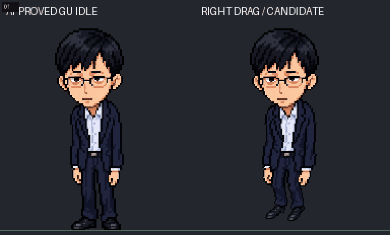
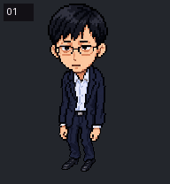
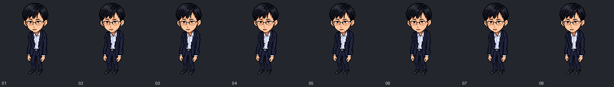
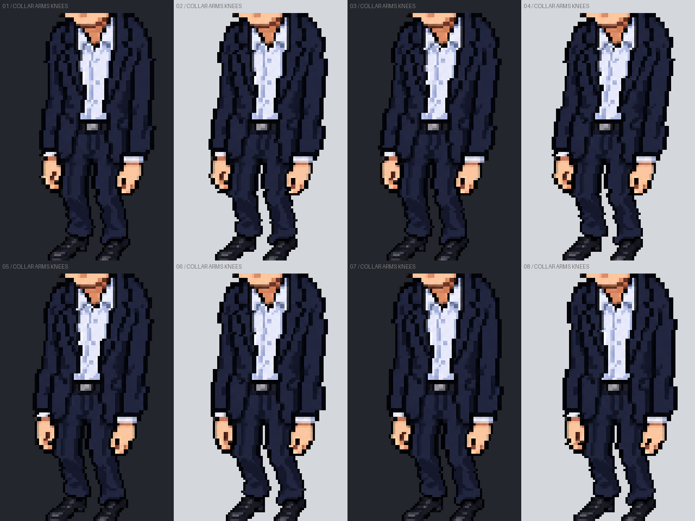
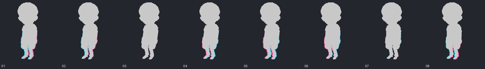

2026-10-22 用户审核通过：GU_DRAG_RIGHT_ART_APPROVED。本目录 8 帧、条带与审核 GIF 已冻结；未接入 App。Feng Look 补帧已延后，其余三项拖拽不变。GIF 内的 CANDIDATE 字样保留为原审核画面，不重新生成素材。
8 帧，120 ms/帧（与当前 Drag 播放间隔一致）。头部、眼镜、脸、脖颈锁定原 Idle 像素。 身体/手臂/双腿一起在颈部锚点下方摆荡；双脚离原地面线 10 px，不做踏步。 衣服采用原 Idle 像素，小腿使用局部编辑素材；没有整人缩放。





GIF 灰底、编号、绿线只用于审核；PNG 素材为真正透明背景。首版比例不合格的身体图已否决，未进入本动画。